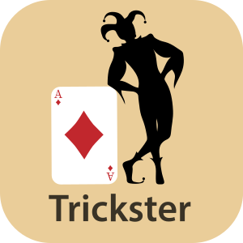

Trickster: In Joseph Campells Modell der Heldenreise bringt der Trickster die Abwechslung und den Humor in die Geschichte. Er repräsentiert Chaos und Anarchie und ist weder völlig gut noch böse. Vielmehr verfolgt der Trickster seine eigenen Ziele und setzt dafür auch mal auf einfallsreiche Weise Regeln außer Kraft. Der Trickster kann die Pläne des Helden, aber auch des Schatten, durch sein Handeln leicht durcheinander bringen, wodurch die Geschichte überraschende Wendungen nehmen kann.
